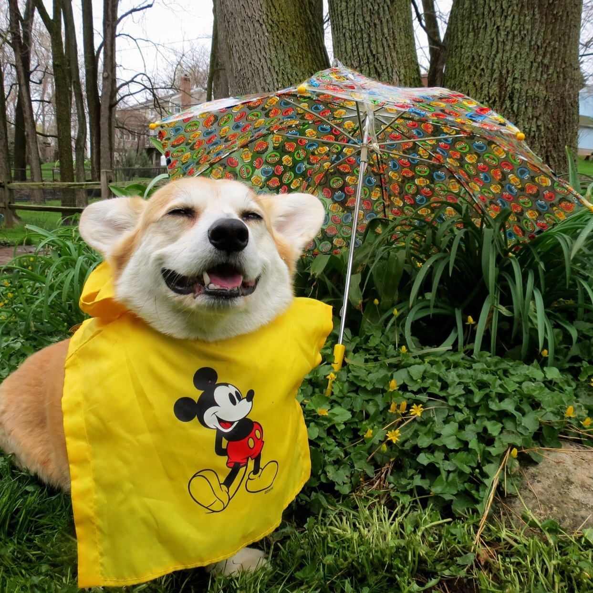

Hello, my name is Chandler and I am a computer science major at Berea College. I enjoy listening to music, spending time with friends, and other typical college things. I'm from Greenup, Kentucky, but now I call Berea my home.
